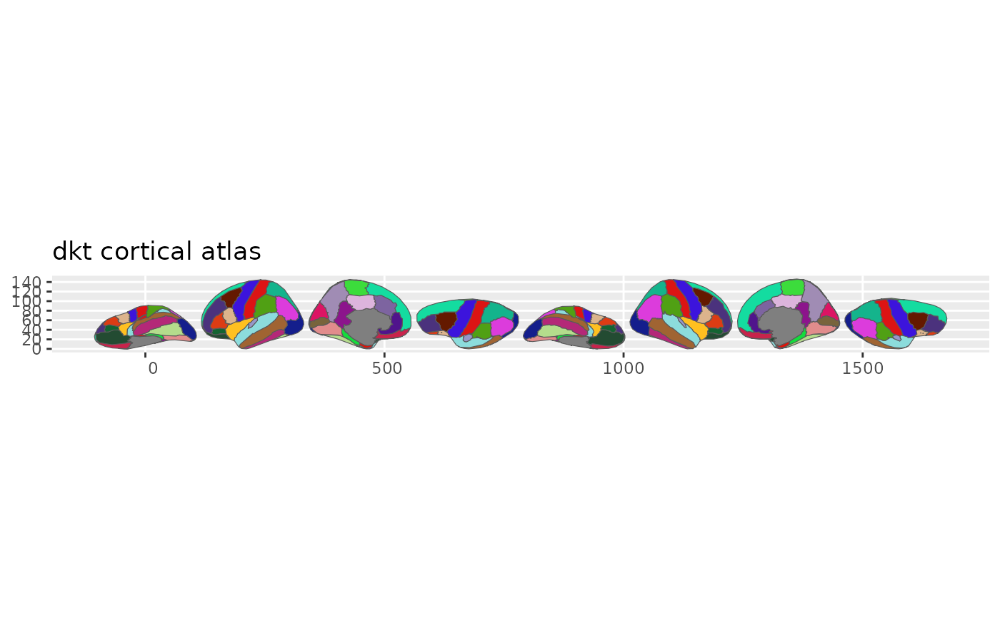

Cortical parcellation with 32 regions per hemisphere based on
the Desikan-Killiany-Tourville labeling protocol. Contains both
2D polygon geometry for ggseg::geom_brain() and 3D vertex
indices for ggseg3d::ggseg3d().
Value
A ggseg.formats::ggseg_atlas object (cortical).
References
Klein A, Tourville J (2012). 101 labeled brain images and a consistent human cortical labeling protocol. Frontiers in Neuroscience, 6:171. doi:10.3389/fnins.2012.00171
See also
Other ggseg_atlases:
destrieux(),
hcpa()
Other cortical_atlases:
destrieux()
Other freesurfer_atlases:
destrieux(),
hcpa()
Examples
dkt()
#>
#> ── dkt ggseg atlas ─────────────────────────────────────────────────────────────
#> Type: cortical
#> Regions: 31
#> Hemispheres: left, right
#> Views: inferior, lateral, medial, superior
#> Palette: ✔
#> Rendering: ✔ ggseg
#> ✔ ggseg3d (vertices)
#> ────────────────────────────────────────────────────────────────────────────────
#> # A tibble: 62 × 3
#> hemi region label
#> <chr> <chr> <chr>
#> 1 left caudalanteriorcingulate lh_caudalanteriorcingulate
#> 2 left caudalmiddlefrontal lh_caudalmiddlefrontal
#> 3 left cuneus lh_cuneus
#> 4 left entorhinal lh_entorhinal
#> 5 left fusiform lh_fusiform
#> 6 left inferiorparietal lh_inferiorparietal
#> 7 left inferiortemporal lh_inferiortemporal
#> 8 left isthmuscingulate lh_isthmuscingulate
#> 9 left lateraloccipital lh_lateraloccipital
#> 10 left lateralorbitofrontal lh_lateralorbitofrontal
#> 11 left lingual lh_lingual
#> 12 left medialorbitofrontal lh_medialorbitofrontal
#> 13 left middletemporal lh_middletemporal
#> 14 left parahippocampal lh_parahippocampal
#> 15 left paracentral lh_paracentral
#> 16 left parsopercularis lh_parsopercularis
#> 17 left parsorbitalis lh_parsorbitalis
#> 18 left parstriangularis lh_parstriangularis
#> 19 left pericalcarine lh_pericalcarine
#> 20 left postcentral lh_postcentral
#> 21 left posteriorcingulate lh_posteriorcingulate
#> 22 left precentral lh_precentral
#> 23 left precuneus lh_precuneus
#> 24 left rostralanteriorcingulate lh_rostralanteriorcingulate
#> 25 left rostralmiddlefrontal lh_rostralmiddlefrontal
#> 26 left superiorfrontal lh_superiorfrontal
#> 27 left superiorparietal lh_superiorparietal
#> 28 left superiortemporal lh_superiortemporal
#> 29 left supramarginal lh_supramarginal
#> 30 left transversetemporal lh_transversetemporal
#> 31 left insula lh_insula
#> 32 right caudalanteriorcingulate rh_caudalanteriorcingulate
#> 33 right caudalmiddlefrontal rh_caudalmiddlefrontal
#> 34 right cuneus rh_cuneus
#> 35 right entorhinal rh_entorhinal
#> 36 right fusiform rh_fusiform
#> 37 right inferiorparietal rh_inferiorparietal
#> 38 right inferiortemporal rh_inferiortemporal
#> 39 right isthmuscingulate rh_isthmuscingulate
#> 40 right lateraloccipital rh_lateraloccipital
#> 41 right lateralorbitofrontal rh_lateralorbitofrontal
#> 42 right lingual rh_lingual
#> 43 right medialorbitofrontal rh_medialorbitofrontal
#> 44 right middletemporal rh_middletemporal
#> 45 right parahippocampal rh_parahippocampal
#> 46 right paracentral rh_paracentral
#> 47 right parsopercularis rh_parsopercularis
#> 48 right parsorbitalis rh_parsorbitalis
#> 49 right parstriangularis rh_parstriangularis
#> 50 right pericalcarine rh_pericalcarine
#> 51 right postcentral rh_postcentral
#> 52 right posteriorcingulate rh_posteriorcingulate
#> 53 right precentral rh_precentral
#> 54 right precuneus rh_precuneus
#> 55 right rostralanteriorcingulate rh_rostralanteriorcingulate
#> 56 right rostralmiddlefrontal rh_rostralmiddlefrontal
#> 57 right superiorfrontal rh_superiorfrontal
#> 58 right superiorparietal rh_superiorparietal
#> 59 right superiortemporal rh_superiortemporal
#> 60 right supramarginal rh_supramarginal
#> 61 right transversetemporal rh_transversetemporal
#> 62 right insula rh_insula
plot(dkt())
